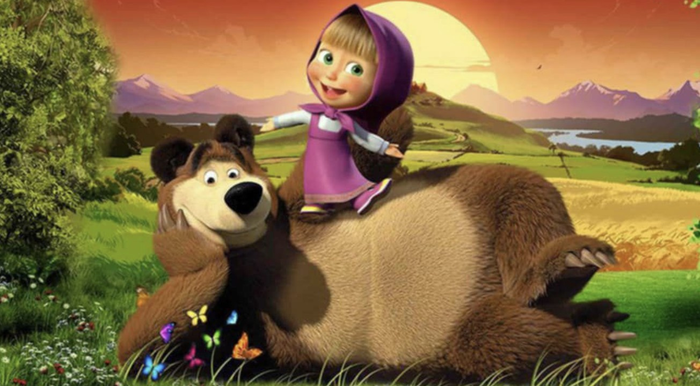

Maşa İle Koca Ayı
Maşa İle Koca Ayı, 2000'lerin başında Türkiye'de yayınlanan popüler bir çocuk çizgi filmidir. Çizgi film, Maşa adlı küçük bir kız ve Koca Ayı adlı büyük bir ayı karakterleri arasında geçen maceraları konu alır.
Maşa İle Koca Ayı konusu genellikle Maşa'nın Koca Ayı ile olan etkileşimleri ve yaşadıkları komik olaylar etrafında döner. Maşa, enerjik ve meraklı bir karakterdir ve Koca Ayı ise sabırlı ve sevecen bir figürdür.
Geçmişte ve günümüzde çocuklar arasında oldukça popüler olan Maşa İle Koca Ayı, eğlenceli ve öğretici içeriğiyle aileler tarafından da tercih edilmektedir. Sizler de bu keyifli ve eğlence dolu çizgi filmi rahatlıkla çocuklarınıza izletebilirsiniz.